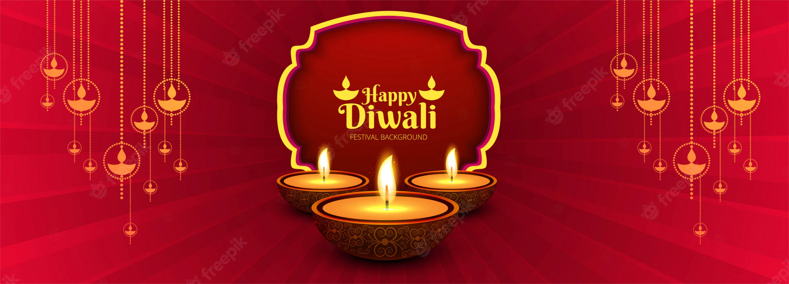

| Home | Holi | Diwali | Chhath | Navratri | Contact |
|  | |||||
Diwali FestivalDiwali (English: /dɪˈwɑːliː/; Deepavali[3] (IAST: dīpāvalī) or Divali; related to Jain Diwali, Bandi Chhor Divas, Tihar, Swanti, Sohrai and Bandna) is a festival of lights and one of the major festivals celebrated by Hindus, Jains, Sikhs, and some Buddhists.[4] The festival usually lasts five days and is celebrated during the Hindu lunisolar month Kartika (between mid-October and mid-November).[5][6][7] One of the most popular festivals of Hinduism, Diwali symbolizes the spiritual "victory of light over darkness, good over evil, and knowledge over ignorance".[8][9][10][11] The festival is widely associated with Lakshmi, goddess of prosperity and Ganesha, god of wisdom and the remover of obstacles, with many other regional traditions connecting the holiday to Sita and Rama, Vishnu, Krishna, Durga, Shiva, Kali, Hanuman, Kubera, Yama, Yami, Dhanvantari, or Vishvakarman. Furthermore, it is a celebration of the day Rama returned to his kingdom in Ayodhya with his wife Sita and his brother Lakshmana after defeating the demon Ravana in Lanka and serving 14 years of exile. In the lead-up to Deepavali, celebrants will prepare by cleaning, renovating, and decorating their homes and workplaces with diyas (oil lamps) and rangolis (colorful art circle patterns).[12] During Diwali, people wear their finest clothes, illuminate the interior and exterior of their homes with diyas and rangoli, perform worship ceremonies of Lakshmi, the goddess of prosperity and wealth,[a] light fireworks, and partake in family feasts, where mithai (sweets) and gifts are shared. Diwali is also a major cultural event for the Hindu, Sikh, and Jain diaspora The five-day long festival originated in the Indian subcontinent and is mentioned in early Sanskrit texts. Diwali is usually celebrated twenty days after the Vijayadashami (Dussehra, Dasara, Dasain) festival, with Dhanteras, or the regional equivalent, marking the first day of the festival when celebrants prepare by cleaning their homes and making decorations on the floor, such as rangolis.[18] The second day is Naraka Chaturdashi. The third day is the day of Lakshmi Puja and the darkest night of the traditional month. In some parts of India, the day after Lakshmi Puja is marked with the Govardhan Puja and Balipratipada (Padwa). Some Hindu communities mark the last day as Bhai Dooj or the regional equivalent, which is dedicated to the bond between sister and brother,[19] while other Hindu and Sikh craftsmen communities mark this day as Vishwakarma Puja and observe it by performing maintenance in their work spaces and offering prayers. Some other faiths in India also celebrate their respective festivals alongside Diwali. The Jains observe their own Diwali which marks the final liberation of Mahavira,[22][23] the Sikhs celebrate Bandi Chhor Divas to mark the release of Guru Hargobind from a Mughal Empire prison,[24] while Newar Buddhists, unlike other Buddhists, celebrate Diwali by worshipping Lakshmi, while the Hindus of Eastern India and Bangladesh generally celebrate Diwali by worshipping the goddess Kali.[25][26][27] The main day of the festival of Diwali (the day of Lakshmi Puja) is an official holiday in Fiji,[28] Guyana,[29] India, Malaysia,[b][30] Mauritius, Myanmar,[31] Nepal,[32] Pakistan,[33] Singapore,[34] Sri Lanka, Suriname, and Trinidad and Tobago. |
|||||
|
Copyright 2024. All Rights Reserved. |
|||||